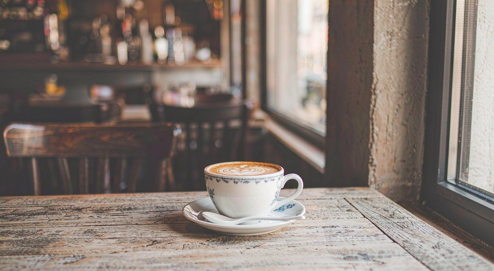
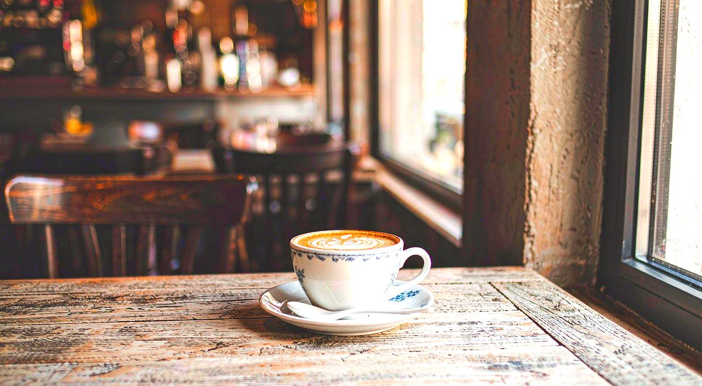

实战教程：照片调色入门——拯救灰暗发闷的照片
灰暗照片就地拯救！
打开 Web PSEditor 调色 →
纯浏览器本地调色，原图不上传。
手机直出的照片常常发灰、发闷——不是你拍得不好，而是相机为了保留细节故意「拍得保守」。只要做一次简单的亮度、对比度、饱和度调整，画面立刻通透起来。网上很多在线调色工具会把你照片上传到服务器处理，既慢又有隐私风险；Web PSEditor 的所有调色运算都在你的浏览器本地完成，大图也秒开秒调。
先看效果：调色前 vs 调色后


第一步：导入照片

打开 Web PSEditor，点击 【文件】→【打开图片】 导入照片。
第二步：一键自动增强（懒人首选）
点击顶部菜单 【图像 (Image)】→【自动调整 (Auto Adjust)】，编辑器会分析直方图并自动校正曝光与对比度。大部分照片这一步就能解决 80% 的问题。
第三步：手动精修三滑块
想要更个性化的效果，点击 【图像】→【色彩校正 (Color Corrections)】：
1. 亮度（Brightness）：整体提亮，建议 +5 ~ +15，过亮会丢失高光细节。
2. 对比度（Contrast）：让画面「立起来」，建议 +10 ~ +25。
3. 饱和度（Saturation）：让色彩更鲜艳，建议 +10 ~ +30，人像慎用以免肤色发橙。
4. 最后加一点 锐化（Sharpen），数值 30~60 即可，细节立刻清晰。
第四步：导出
点击 【文件】→【另存为】，JPG 质量 85 以上即可发布。建议保留原图，调色版另存，方便日后重新调整。
💡 调色口诀：先自动，后手动；先亮度，后色彩；每次只微调一点，反复对比效果。
🎯
动手实操练习
纯本地运算
打开编辑器，用你自己的照片按步骤调色，全程无需注册、无需上传。